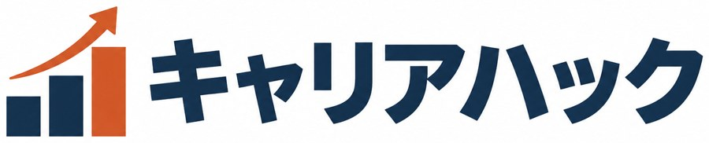
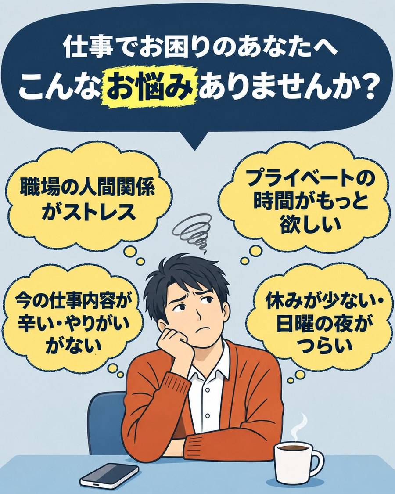
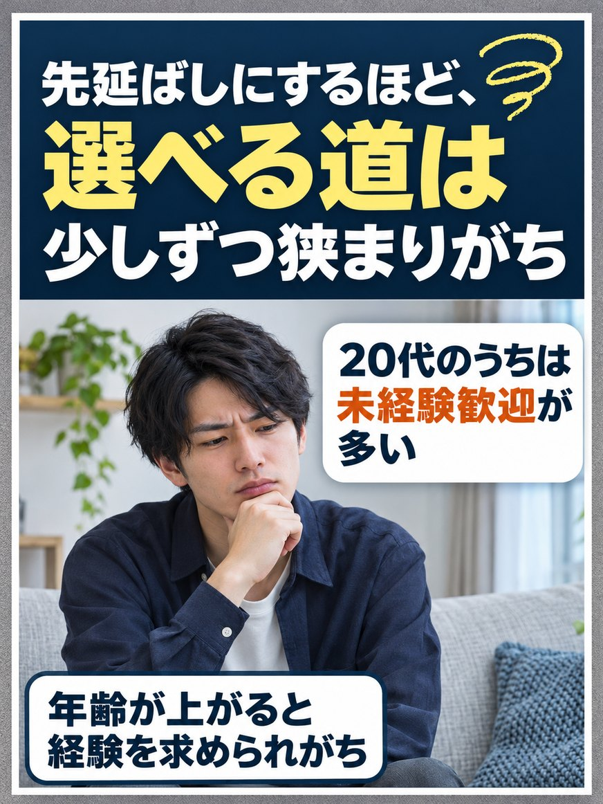
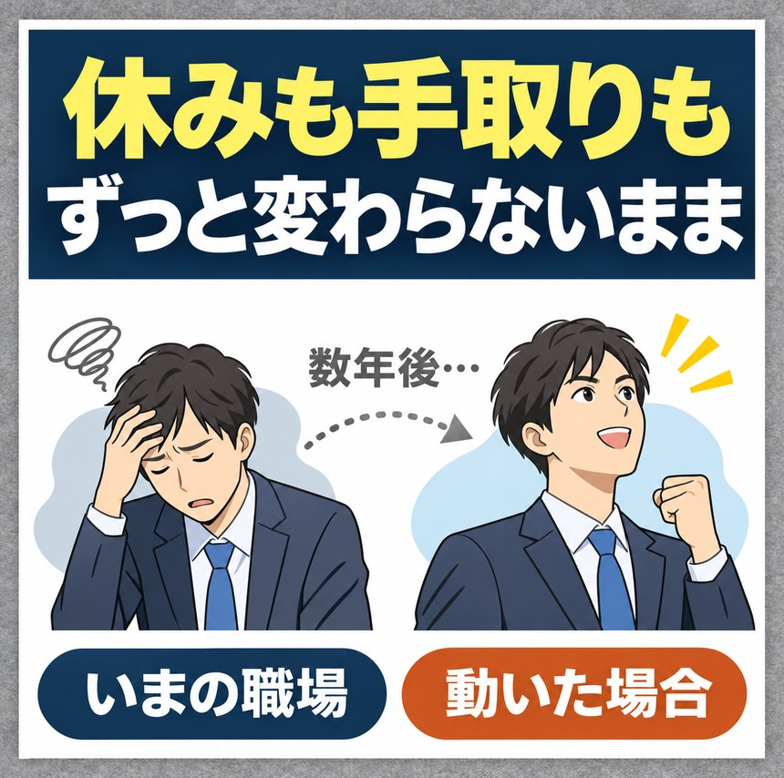
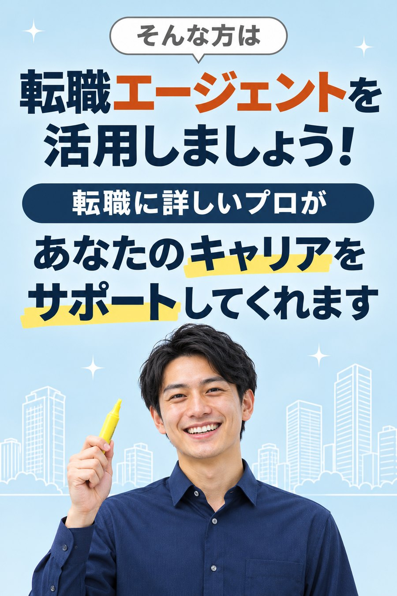
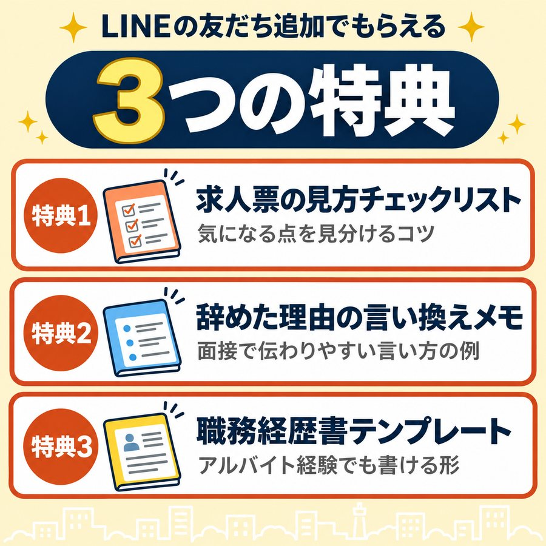
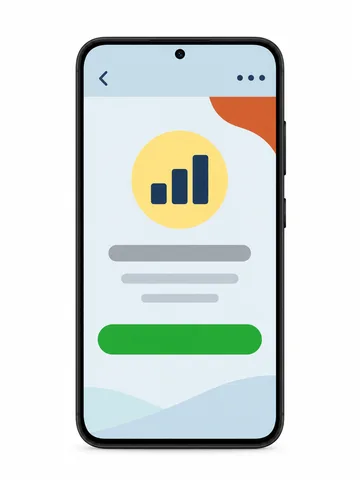

20代の営業職で年収アップ410万円から534万円へ
転職で年収が上がった例
年収124万円UP
20代の営業職が、転職によって年収を410万円から534万円へ。124万円のアップです。

累計 26万人以上の就職サポート
20代・未経験・第二新卒の方へ
友だち追加だけで登録・相談料0円
求人選びから面接練習まで
LINEで無料サポート
あなたと同じ悩みを、
ひとつずつほどいていきます
あなたの働き方を変える一歩を、一緒に
転職で年収が上がった例
20代の営業職が、転職によって年収を410万円から534万円へ。124万円のアップです。
飲食の接客から輸入雑貨の営業へ
飲食店で接客をしていた26歳の女性が、輸入雑貨の営業へ。年収は300万円から400万円になり、100万円のアップです。
残業は月10時間以内、休みもしっかり
派遣として3年働いたあと、家電販売の仕事へ。月収は5万円アップし、残業は月10時間以内、休日もしっかり休めるようになりました。
※個人の感想・成果を保証するものではありません

しかも、このまま
我慢して働き続けても、、、


でも、どうすれば…


¥0相談から転職まで完全無料
¥0友だち追加だけで登録今すぐ無料で相談する

¥0友だち追加だけで登録特典をもらって無料相談※求人は時期や地域によって変わります。紹介できる内容は相談時にお伝えします。
アルバイトだけでも相談して大丈夫です。未経験から応募できる求人を中心に、職務経歴書づくりから一緒に進めます。
短期間で辞めた理由は、言い方を整えるところから始めます。面接の前に、LINEで何度でも練習できます。
迷っている段階でも大丈夫です。話してみて、今は動かないと決めてもかまいません。催促はしません。
※よくあるご相談を例にした内容で、実際の個人の声ではありません。
でも、こんな自分でも
本当に転職できますか？
ご相談をはじめたあとで、
連絡なしにやめてしまうと、
こちらも進められません。
やめるときは、前日までに一言
LINEで送ってください
STEP2

LINEを
友だち追加
STEP3
3つの特典付き 無料キャリア相談
LINEのトーク画面から
無料相談アンケートに回答する
STEP4
回答のあと、気になる求人があれば
担当者と一緒に応募へ
¥0相談から転職まで完全無料
¥0友だち追加だけで登録今すぐ無料で相談するQ.電話で連絡が来ることはありますか？
A.はい、状況に応じて担当者からお電話でご連絡することがあります。つながりやすい時間帯があれば、LINEで先にお知らせください。
Q.迷っているだけの段階でも、LINEしていいですか？
A.大丈夫です。迷っている段階の相談を前提にしています。求人を見ずに終わっても、催促はしません。
Q.バイトの経験しかなくても、相談できますか？
A.できます。未経験から応募できる求人を中心に一緒に探します。職務経歴書がまだ無くても、一から作るところから始められます。
Q.なぜ無料なのですか？
A.採用が決まったときに、紹介した人材紹介会社が求人企業から手数料を受け取る仕組みだからです。人材紹介会社は、法律で原則として求職者から手数料を受け取れません（職業安定法 第32条の3 第2項）。あなたに費用はかかりません。
Q.ページの数字は、どこの数字ですか？
A.各社が公式に公表している数字です。平均年収113万円UP・内定率80%以上・定着率96%も、会社ごとに集計期間や対象が違います。くわしい条件はページ最下部をご覧ください。